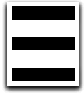

Are you new?
×
Welcome! Thank you so much for downloading NoteBar. We hope you enjoy our app :) Want to stay updated? Follow me on twitter
here.
- Rohin, Developer

Welcome to NoteBar 3.0.0
Featuring a complete redesign, NoteBar 3 is ready for use once again
Enable Dark Mode
Enable Minimal Font
START WRITING